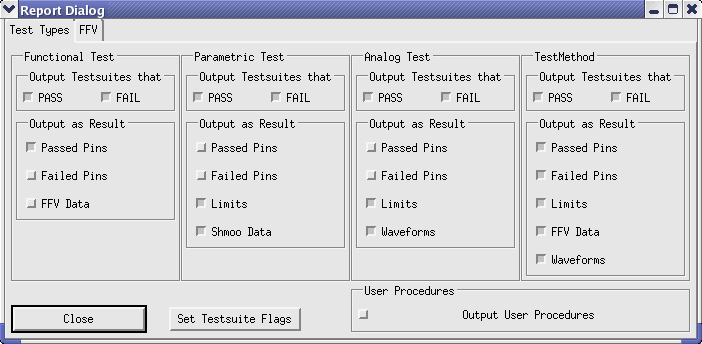

Test Debugging and Data Logging
The SmarTest includes a number of integrated facilities for monitoring and debugging. These facilities exist within the various tools and provide you with a localized means of observing and modifying every test detail.
The actions required in order to observe the test results in the report window consist of activating the boxes in the Report Dialog window opened from the report window as shown in the figure below.

For debugging the digital test, you can use the Result Analysis tools such as the Timing Diagram, Pattern Tool, and Error Map.
For debugging your test method programs, the SmarTest provides the Test Method Debugger. Using this tool, you can do debug tasks such as:
- Viewing your source code
- Setting breakpoints
- Viewing and editing local and global variables
- Traversing the call stackNote When you use this tool, remember to activate the Set breakpoint test suite flag.
Functional changes
- Introduced before SmarTest 6.3.2